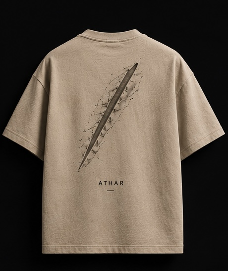

Not everything disappears.
Some moments leave traces behind,
shaping memory long after they are gone.
Athar explores what remains.
05
•
╲
•
╲
•
ATHAR
MARK
Presence remains
after
passage.
after
passage.
CONCEPT
ARCHIVE NOTES
Concept
05 — ATHAR
Classification
Mark
Status
Active
Archive Reference
ATHAR-05
LIFESTYLE
GARMENT
FRONT

BACK

MATERIAL
FABRIC
PRESENTATION
PACKAGING